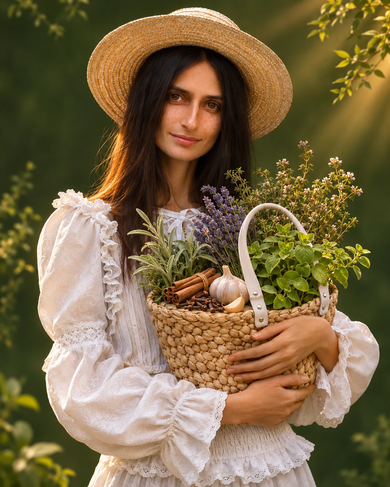

Чеснок
Аллицин
Свежий, измельчённый, в соусах
Наташа Сведовая · практический материал
Почему молочница возвращается — и с чего начать, чтобы разобраться с причинами?
01 / Начнём с причин
После антибиотиков возникают новые симптомы. Меняется пищеварение. Знакомые способы восстановления дают временное облегчение.
Candida может естественным образом присутствовать на слизистых и в кишечнике. Её рост связан с состоянием микробиоты, иммунной защитой и другими факторами.
Главный вопрос — какие условия способствуют повторению проблемы именно у вас?
Самопроверка
Отметьте состояния, которые замечаете у себя.
02 / Личная история
Я много лет работала над собственным здоровьем. Изучала организм, меняла питание, пробовала разные подходы. Но многие проблемы продолжали сопровождать меня.
А потом я перешла на противогрибковое питание и прошла комплекс противопаразитарных и противогрибковых мероприятий.
У меня прошла молочница, с которой я жила практически всю жизнь. Наконец наладилась работа кишечника.
Это мой личный опыт комплексной работы над здоровьем. Именно он вдохновил меня глубоко исследовать грибы, микробиоту, питание и растения.
Наташа Сведовая · более 12 лет натуропатической практики. Личный опыт не гарантирует аналогичных результатов.
03 / На вашей кухне
Растения содержат вещества, противогрибковая активность которых изучается учёными.
Аллицин
Свежий, измельчённый, в соусах
Карвакрол
В овощах и бобовых
Эвгенол
Щепотка в пряных блюдах
Тимол
В супах и чечевице
Коричный альдегид
В кашах и ягодах
Лабораторная активность отдельных веществ не означает, что кулинарное применение растений лечит кандидоз. Учитывайте индивидуальную переносимость; не используйте эфирные масла внутрь для самолечения.
Базилик — 40 г, петрушка — 20 г, тыквенные семечки — 30 г, чеснок — 1 зубчик, оливковое масло и лимонный сок — по 1 ст. л.
Измельчите всё в блендере. Подавайте с овощами, гречкой или нутом.
Готовая чечевица — 150 г, кабачок — 150 г, брокколи — 100 г, чеснок — 1 зубчик, орегано и тимьян — по ½ ч. л.
Припустите овощи, добавьте чечевицу и специи. Заправьте оливковым маслом.
04 / От знаний к практике
Как изменились пищевые привычки, тяга к сладкому, пищеварение и сон? Какие симптомы сохраняются?
Отметки и записи сохраняются только в этом браузере. Семь дней — опыт наблюдения за привычками, а не курс лечения.
05 / Следующий шаг
21-дневная программа «Антигрибковое очищение» в пространстве ВЕДАНИЕ.
Короткие аудиоуроки — слушайте в удобное время.
Последовательная программа питания и поддерживающих практик.
Углубляем знания и разбираем вопросы.
Поддержка Наташи и женщин, которые учатся вместе с вами.
Питание, свойства растений, повседневные привычки и собственный план дальнейших действий — с возможностью задавать вопросы, а не искать ответы в одиночку.
Опыт участниц и участников
Полные тексты отзывов с сайта антипаразитарного курса. Они относятся к другим программам, не к новому антигрибковому протоколу. Результаты индивидуальны.
Я из опаздунов))) Странное дело, за время наблюдения за антипаразитарной программой похудела на 5 кг - просто стала меньше есть, меньше смешивать продукты, меньше сладкого, исключила грибы, замораживаю воду - в общем пытаюсь вжиться в правильное питание, потому что для меня это действительно революция и осуществить все одним махом просто нереально. Пока я научусь с этим жить - это все требует времени, а работу-то никто не отменял... Эфирные масла я использую уже год, но не плотно, а по мере нахождения им применения, не оставляю надежд пройти саму антипаразитарную программу, но видимо уже весной, пока куплю все, что надо... и очень боюсь лекарств))) Я за этот месяц получила огромный пласт информации, спасибо за это огромное. Перевариваю, одним словом)
Наташа Приветствую! Как я и говорил, в моей жизни все бегом на скаку или тишина. Вот сейчас такой период, когда все что улавливаю, смотрю одним глазом. Если бы знал, например, заранее уже купил бы масло касторовое.
Потом моя голова ушла в работу и возвращаться осознанно и глубоко не получается. Вот поэтому я переспрашиваю или прошу помощи повторение материала, так как бывает пересмотреть даже видео не получается.
Да, изменения есть. Наблюдаю, что я спокойно теперь обхожусь без хлеба, домашних лепешек, печенья, сладкого, и вздутие живота прекратилось, но конечно еще напрягаюсь, чтобы что-то не забыть с собой в дорогу, так как многое делаю машинально)) Здорово, когда есть всегда помощники и подсказчики. Чтобы во все вьехать нужно время.
Я прошла 3 курса у Наташи (летнее сыроедение, капитальное очищение, антипаразитарный курс) и вот сейчас я пришла к состоянию умиротворения и внутреннего спокойствия :) Спасибо за позитивную настройку на жизнь!
Физически: нормализовался цикл, ушли прыщи, выпрямилась спина.
р.s. Есть еще к чему стремиться. Да, порой я срываюсь на «плохую еду», но стараюсь получать от этих срывов удовольствие. Потом знаю, в каком направлении двигаться (что есть, почиститься, поголодать и т.д.).

06 / Приглашаю вас лично
21 день практики. 5–12 минут в день. Три живые встречи. Наставничество и поддержка сообщества.
Первый месяц участия в ВЕДАНИИ.
После первого месяца — 2 000 ₽ в месяц при продолжении подписки.
Примерно 117 ₽ в день за первый месяц.
Сначала познакомимся
Бесплатный вебинар «Как вывести Кандиду и другие грибы из организма без компромиссов и в гармонии с собой»
Поговорим о Candida, микробиоте, питании, растениях и последовательном подходе к здоровью.
Регистрация скоро откроется.
Буду рада пройти этот путь вместе с вами!
Обнимаю, Наташа Сведовая.